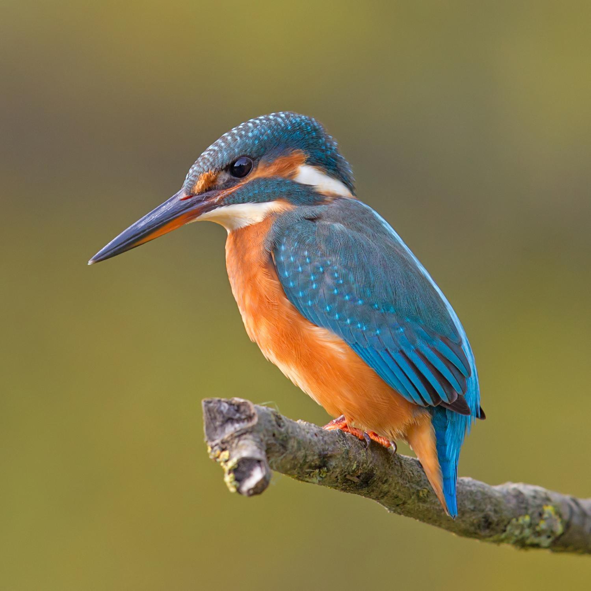

الرفرافCommon Kingfisher
Alcedo atthis
مستوطن ومهاجرResident & Migratory
يُعرف الرفراف علميًا باسم Alcedo atthis، وينتمي إلى فصيلة الرفرافيات (Alcedinidae) ضمن رتبة الرفرافاويات (Coraciiformes)، وهو طائر صغير زاهي الألوان بريش أزرق فيروزي لامع على الظهر وبرتقالي محمر على البطن، ومنقار طويل حاد قوي يستخدمه للانقضاض السريع على فرائسه من فوق سطح الماء مباشرة. هذا الطائر مستوطن ومهاجر في آن (R/M) في العراق، إذ توجد مجموعات مقيمة تتكاثر على ضفاف الأنهار والقنوات المائية، بينما تفد إليه أعداد إضافية مهاجرة شتاءً.
The Common Kingfisher is scientifically known as Alcedo atthis, belonging to the kingfisher family (Alcedinidae) within the order Coraciiformes. It is a small, vividly colored bird with glossy turquoise-blue plumage on the back and orange-red underneath, and a long, sharp, powerful bill it uses to strike rapidly at prey directly from above the water's surface. This bird is both resident and migratory (R/M) in Iraq, with resident populations breeding along riverbanks and water channels, while additional numbers arrive in winter.
يصنَّف الرفراف ضمن الأنواع غير المهددة (Least Concern) وفق الاتحاد الدولي لحفظ الطبيعة، بفضل انتشاره الواسع عبر أوراسيا وأفريقيا. ويسهم الرفراف في النظام البيئي العراقي عبر افتراسه للأسماك الصغيرة والحشرات المائية واليرقات، ويحفر أعشاشه في أنفاق ضمن الضفاف الترابية الرأسية للأنهار والقنوات، ويُعد وجوده المستقر على ضفاف الأنهار والأهوار مؤشرًا على صفاء المياه وغنى المسطحات المائية بالأسماك الصغيرة التي يعتمد عليها.
The Common Kingfisher is classified as Least Concern by the IUCN, thanks to its wide distribution across Eurasia and Africa. It contributes to Iraq's ecosystem by preying on small fish, aquatic insects, and larvae, digging its nests in tunnels within the vertical earthen banks of rivers and channels, and its stable presence on riverbanks and marshes indicates water clarity and the richness of these water bodies in the small fish it depends on.